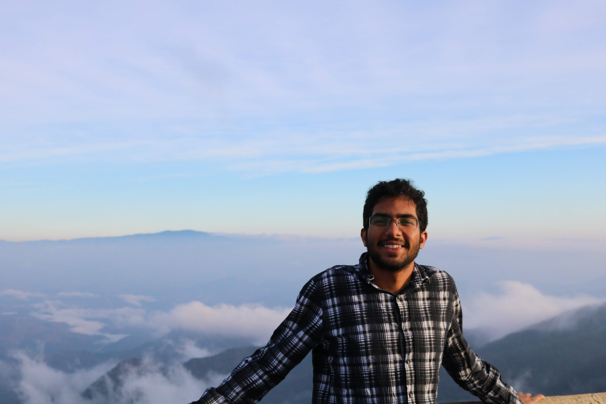

Ashok Vardhan Makkuva
|  | Postdoctoral researcher |
About
Hi there! I am a postdoctoral researcher with Michael Gastpar at EPFL, where I also closely collaborate with Martin Jaggi and Hyeji Kim.
I got my PhD in Electrical and Computer Engineering at UIUC working with Pramod Viswanath. During my PhD, I have also had the pleasure to collaborate with Sewoong Oh and Sreeram Kannan at UW Seattle, and Hessam Mahdavifar at University of Michigan. Prior to that, I obtained my masters from UIUC with Yihong Wu.
Earlier, I graduated from IIT Bombay with a B. Tech. (Honors) in Electrical Engineering and Minors in Mathematics working with Vivek Borkar.
Research
My primary research interests are in machine-learning, information theory, and coding theory. I am fairly interested in both theoretical and applied problems in these areas. Broadly speaking, my research is driven by two themes: (i) developing principled theoretical tools and frameworks to solve real-world problems and (ii) using these applied problems as a new lens to better understand theory. In the following paragraphs, I will give you a brief glimpse of my research along these themes.
During the first half of my PhD (2017-2019), most of my works were centred around the former theme. In particular, inspired by the tremendous success of recurrent neural networks such as LSTMs and GRUs in complex natural language processing tasks such as machine translation, we wanted to unravel the mystery behind their impressive performance via a theoretical lens. We found out that a popular neural network architecture, called Mixture-of-Experts (MoE), lies at the heart of these gated neural networks. Despite being so ubiquitous, there was very little theoretical understanding about MoE. Even basic questions such as learnability of their parameters remained an open problem for almost 25 years. In our work we precisely addressed this and proposed the first principled algorithms with theoretical guarantees for MoE: Breaking the gridlock in MoE and Learning in Gated neural networks.
Around similar time, there were also many technical innovations happening in the field of generative modeling, especially with the advent of GANs.
Despite their impressive empirical performance, theoretical understanding of GANs remained (and still remains) elusive.
One of the pioneering works addressing this was the popular Wasserstein GAN which established
a deep connection between generative modeling and optimal transport. However, the corresponding metric proposed in the paper, Wasserstein- metric, is not theoretically tractable.
On the other hand, it was well known that the classical Wasserstein-
metric, is not theoretically tractable.
On the other hand, it was well known that the classical Wasserstein- metric enjoyed a lot of nice theoretical properties and beautiful connections to many areas of mathematics.
However there were no principled algorithms to learn the optimal transport map under this nice metric. Bridging this gap, we proposed a
clean mathematical framework to learn the optimal transport and also a principled algorithm for the same. It outperformed the then state-of-the-art algorithms on a variety of tasks: Optimal transport.
metric enjoyed a lot of nice theoretical properties and beautiful connections to many areas of mathematics.
However there were no principled algorithms to learn the optimal transport map under this nice metric. Bridging this gap, we proposed a
clean mathematical framework to learn the optimal transport and also a principled algorithm for the same. It outperformed the then state-of-the-art algorithms on a variety of tasks: Optimal transport.
In the recent years, I have been very interested in designing nonlinear error-correcting-codes via deep-learning. The motivation is that digital communication, and especially error-correcting-codes, form the backbone of our modern information age. However, the design of these codes is an extremely challenging task, mostly driven by human-ingenuity. Hence the discovery of codes has been sporadic. This raises a natural question: Can we somehow automate and accelerate this progress? The primary goal of our research is to precisely address this via harnessing deep-learning tools to discover new state-of-the-art codes. Along this line, we recently designed a new class of codes called KO codes that outperform the classical Reed-Muller and Polar codes under fixed encoding/decoding complexity. These codes exhibit many fascinating properties, such as random Gaussian behavior despite being structured!
For more details about my research, please visit here and here.